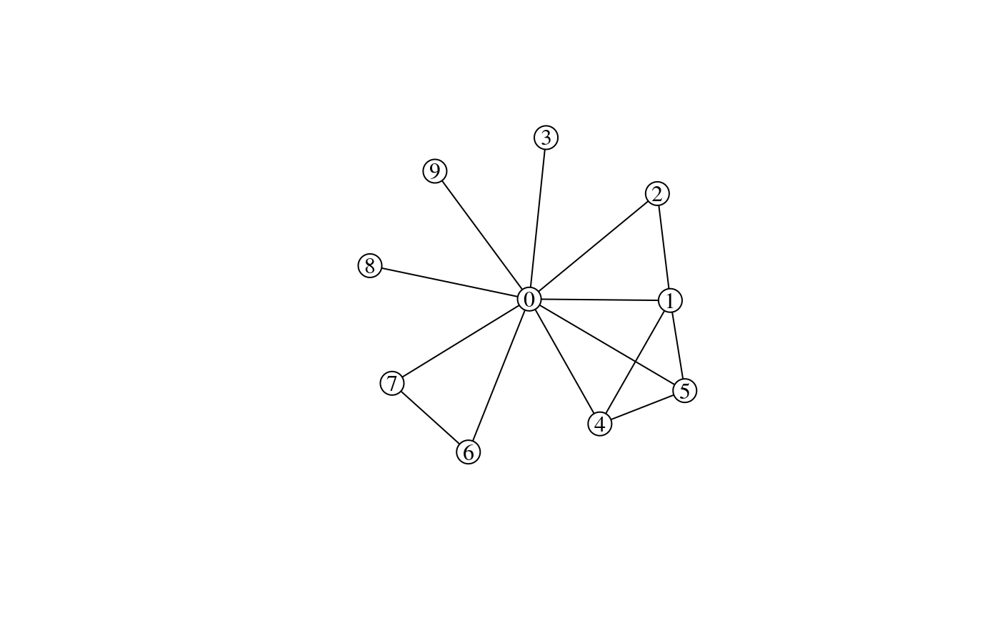
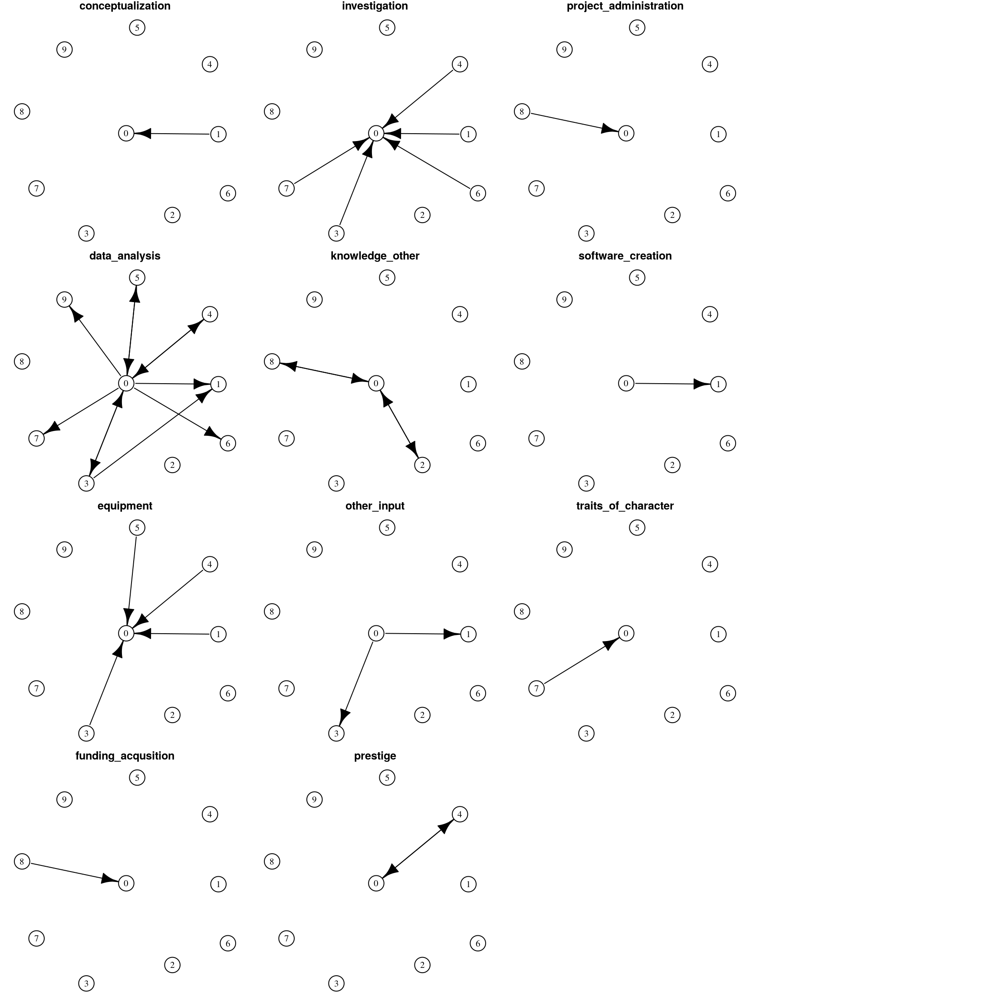

Michał Bojanowski (Kozminski Univeristy), Dominika Czerniawska (University of Manchester and University of Warsaw), Wojciech Fenrich (University of Warsaw)
Authors thank (Polish) National Science Centre for support through SONATA grant 2012/07/D/HS6/01971 for the project Dynamics of Competition and Collaboration in Science: Individual Strategies, Collaboration Networks, and Organizational Hierarchies (http://recon.icm.edu.pl).

This is a dataset built from a qualitative study of 40 Individual in-Depth Interviews (IDI) conducted in the period April-August of 2016 as a part of the RECON project on collaboration in Polish science. This repository is an R package, but the data is also stored in portable CSV format so that it can be used with any other analytical software.
Data collection
Data consists of 40 individual in-depth interviews conducted between April and August 2016 by two interviewers. The interviewees mentioned 333 collaborators in total. The sample consists of 20 female and 20 male scientists from six Polish cities. Respondents represented a broad range of disciplines: natural sciences, social sciences, life sciences, the humanities, engineering, and technology on different levels of career from PhD candidates to professors.
Each interview consisted of several parts two of which are of relevance here:
- Respondents were asked to name up to 10 important collaborators during last 5 years. Each collaborator was discussed separately resulting with information about gender, scientific degree, nationality, and university department (if possible). Collected data is available in the
nodestable described below. - During the interview a network of collaboration among collaborators mentioned in (1) was reconstructed using corkboard, pins, and rubber bands. The corkboards were photographed and later digitized into the
collaborationtable described below. - For each collaborator the respondents were asked about academically-relevant resources he/she contributed to the collaboration and what resources were contributed by the collaborator. Interviews were audio-recorded and later transcribed. The text of the transcripts was analyzed using QDA Miner Lite1 in order to code resources engaged by respondents (the egos) and their collaborators (the alters) to every collaboration. The coding was performed by two persons. Random sample of the interviews was double-checked by different researchers to ensure reliability. The data is available in table
resourcesand described in detail below.
While collaboration networks assembled from part (2) include alter-alter ties, the data on resources is available only for ego-alter dyads.
Data structure
The data is contained in three tables as shown in the diagram below:
In all tables the NA symbol (Not Available) is used to encode missing information.
Node data
The nodes table has 374 rows and the following 7 columns:
-
id_interview– Unique interview identification number -
id_node– Node number unique within each interview. Value0corresponds to the respondent (the ego) -
is_ego– A binary variable which is equal to1for the respondents (the egos) and0otherwise. -
is_polish– A binary variable which is equal to1if the researcher is affiliated with a Polish academic institution and0otherwise. -
department– A numeric variable providing information whether two persons are affiliated with the same department at the same academic institution. Two researchers \(i\) and \(j\) mentioned in the same interview are affiliated with the same department if the have valid values on variabledepartmentand these values are equal. -
scidegree– Character variable encoding scientific degree. Values are"mgr"=MA,"dr"=PhD,"drhab"=habilitated PhD, and"prof"=full professor. -
female– Binary variable which is equal to1if the researcher is female and0for males.
Collaboration networks
The collaboration table has 1732 rows and the following 3 columns:
-
id_interview– Unique interview identification number -
fromandto– Node numbers referencingid_nodecolumn from thenodestable. Asid_nodein tablenodesthe values are unique within each interview. Pair of researchers declared as collaborators. For example a row withid_interview=2,from=1, andto=2indicates that in the interview 2 nodes 1 and 2 where mentioned by the respondent as collaborators.
Resource “flow” networks
The resources table has 1761 rows and the following 4 columns:
-
id_interview– Unique interview identification number. -
fromandtwo– Node numbers referencingid_nodecolumn from thenodestable. Asid_nodein tablenodesthe values are unique within each interview. -
code– Character variable indicating what type of resource was declared to flow from researcherfromto researchertofrom interviewid_interview.
Possible values for variable code are:
| code |
|---|
| career_development |
| conceptualization |
| contacts_in_academia |
| data_analysis |
| data_curation |
| data_or_other_sources |
| drafting |
| equipment |
| formal_administration |
| funding_acqusition |
| investigation |
| knowledge_other |
| methodology |
| motivation |
| non_academic_contacts |
| other_charactersitics |
| other_input |
| prestige |
| professional_achievements_formal |
| project_administration |
| proofreading |
| prototype_construction |
| software_creation |
| supervision_in |
| traits_of_character |
Example
Below are example data and plots from interview 2.
Node data:
| id_interview | id_node | is_ego | is_polish | department | scidegree | female |
|---|---|---|---|---|---|---|
| 2 | 0 | 1 | 1 | 1 | dr | 0 |
| 2 | 1 | 0 | 1 | 2 | dr | 0 |
| 2 | 2 | 0 | 1 | 3 | dr | 1 |
| 2 | 3 | 0 | 1 | 3 | dr | 1 |
| 2 | 4 | 0 | 1 | 2 | dr | 1 |
| 2 | 5 | 0 | 1 | NA | dr | 1 |
| 2 | 6 | 0 | 0 | NA | prof | 0 |
| 2 | 7 | 0 | 1 | NA | NA | NA |
Collaboration network:
g <- collaboration %>%
filter(id_interview == 3) %>%
select(-id_interview) %>%
igraph::graph_from_data_frame(directed=FALSE) %>%
simplify()
xy <- graphlayouts::layout_with_stress(g)
plot(
g,
layout=xy,
vertex.color = "white",
edge.color = "black",
vertex.label.color = "black"
)
Resource flows:
edb <- resources %>%
filter(id_interview==3) %>%
select(-id_interview) %>%
arrange(from, to)
rg <- graph_from_data_frame(edb)
rnames <- sort(unique(E(rg)$code))
layout(matrix(1:16, 4, 4))
for(r in rnames) {
rgs <- delete.edges(rg, E(rg)[code != r])
opar <- par(mar=c(0,0,1,0))
plot(
simplify(rgs),
layout=xy,
vertex.color = "white",
edge.color = "black",
vertex.label.color = "black",
main = r
)
par(opar)
}
layout(1)
Download links
This is an R package, but you can download the files in CSV format using links below:
License
MIT license, see file LICENSE.md.
A product of Provalis Research, see https://provalisresearch.com/products/qualitative-data-analysis-software/ .↩